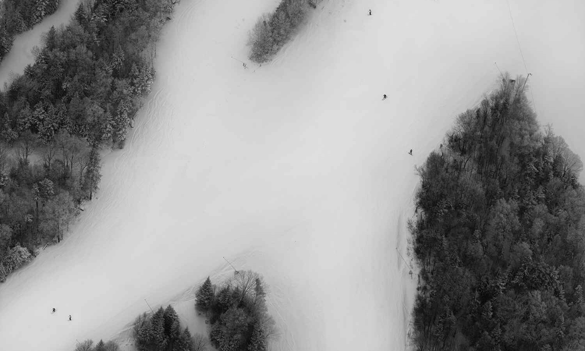
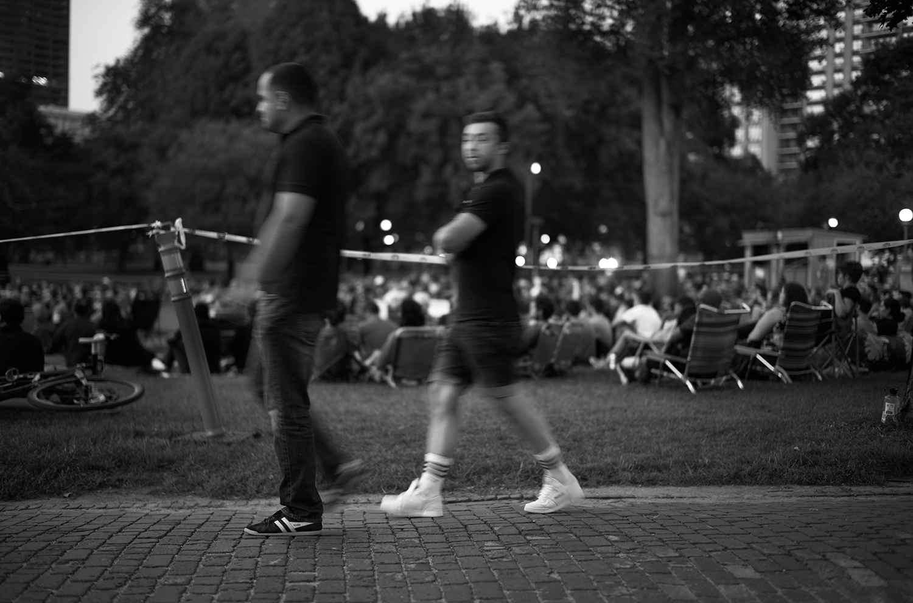

“There is another world, but it is within this one.”
“It is not every day that the world arranges itself into a poem.”
“Reality is a cliché from which we escape by metaphor.”
« Il y a un autre monde, mais il est dans celui-ci »


Explore the Book
Explore the visual meditation inspired by Wallace Stevens’ Thirteen Ways of Looking at a Blackbird. Click to see the book and experience the world through a new lens.
View the BookStay in Touch
Sign up to receive exclusive previews, exhibition updates, and behind-the-scenes insights into the making of Thirteen Ways of Looking at a Blackbird.